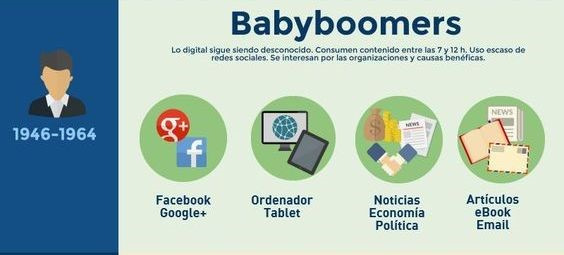
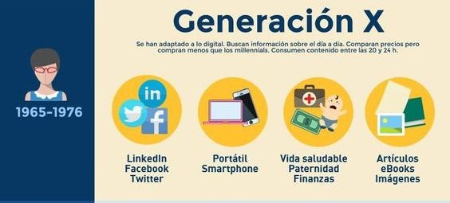
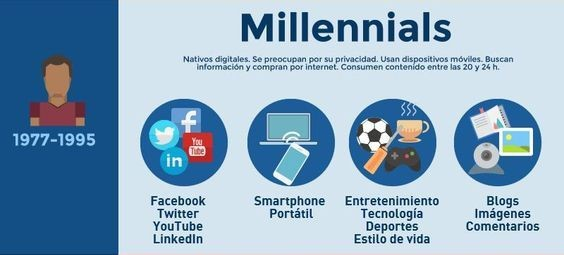
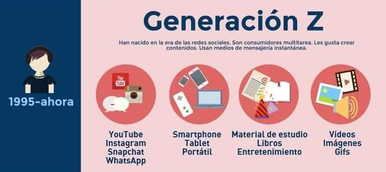
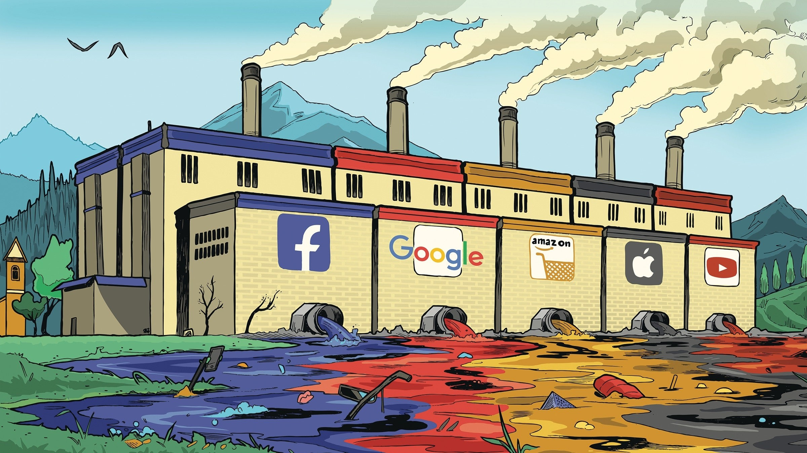
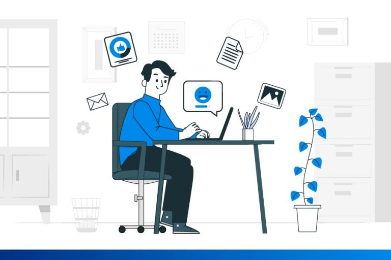
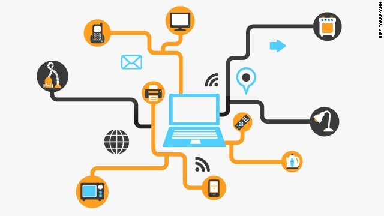
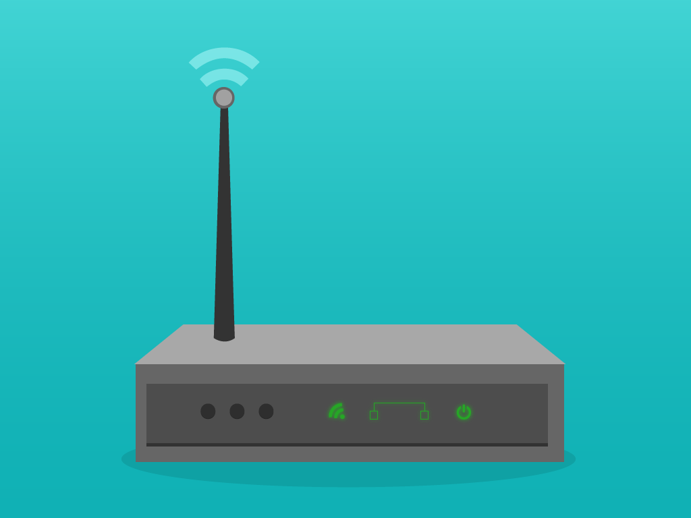
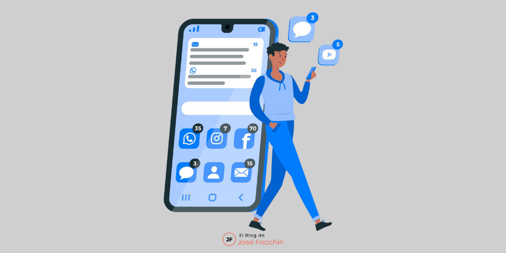

TECNOLOGÍA INTERNET
Unidad I
Uso del internet según la generación
UNIDAD 1: Uso del internet según la generación

- Generación Baby Boomers (46′ – 64′)
Son muy comprometidos con los temas que les interesan, prefieren la calidad
ante la cantidad, y valoran la productividad. ¿Cómo usan Internet? En las encuestas realizadas por BuzzStream en el 2015, se revela que más de la mitad de los baby bomers se conectan en Internet mientras comen. Para
acceder a la red, el 40% emplea ordenadores portátiles y tablets como dispositivos principales. Se conectan, sobre todo, entre las 7 de la mañana y las 12 del medio día, horario que, en general es laboral. Más del 70%
de esta generación emplea Internet para buscar noticias, artículos y leer e-mails. Facebook es la red social en la que tienen más presencia. Uno de los principales intereses en esta red son los contenidos de los medios
de comunicación. También buscan información sobre economía, política y actualidad.

- Generación X (65′-76′)
Cuando el Internet vio la luz, la Generación X se encontraba ya en plena madurez, eran
jóvenes o adultos que vieron cómo cambió su vida (hábitos, entorno laboral, competencias, etc.) a causa de la explosión del nuevo paradigma de la información. Tuvieron que adaptarse a los cambios y romper los moldes
para no quedarse atrás. ¿Cuáles son sus hábitos de consumo en Internet? El 80% se conecta sobre todo en las últimas 4 horas del día, en la cena y antes de dormir a través de portátiles y smartphones. Una de las actividades
que más realizan en Internet es la comparación de precios y de productos de diferentes marcas. Al uso de Facebook se le suma Twitter y LinkedIn como las redes en las que tienen más presencia. Buscan información sobre
finanzas, estilo de vida saludables, tips y pasos para realizar diferentes tareas. Consumen un 76% de contenido de entretenimiento, y un 52% de contenido sobre vida saludable.

- Generación Y – Millennials (77′-95′)
Los millennials son nativos digitales: Internet nació cuando ellos eran
muy pequeños, por lo tanto fueron creciendo a la par. Hoy en día, los Millennials son jóvenes y adultos que emplean Internet para informarse, divertirse, comunicarse con los demás, compartir contenidos, comprar productos
y buscar pareja. Fueron los primeros en usar las redes sociales y han acompañado su desarrollo y participado incluso de sus actualizaciones principales. Estos son sus principales hábitos de consumo: Prefieren conectarse
de noche, emplean diferentes dispositivos para entrar a la red, sobre todo smartphones y portátiles. Están en la mayoría de las redes sociales aunque su interés por una u otra es muy cambiante. Les interesa conectarse
con amigos, compartir sus experiencias, comentar y recomendar. Además, más del 70% de la generación consume música, películas y series a través de plataformas de streaming. Entre sus principales intereses encontramos
el entretenimiento, los viajes, la tecnología y los blogs.

Generación Z – Centennials (96′ – …)
Esta es la generación más joven, eso ya lo sabemos todos: Crecieron en pleno auge
de Internet, las redes sociales y el streaming, por lo que su formación es mucho más interactiva que la de las generaciones anteriores que han tenido que aprender, con más y menos dificultades, de esta revolución de
la información. Su consumo es multipantalla y las redes a las que acceden, sobre todo, son Instagram, Youtube y Snapchat. ¿Cómo se comportan en la red? Además de emplear Internet para el entretenimiento, los Centennials
encuentran en la red un espacio para adquirir conocimiento, estudiar, y hacer trabajos en equipo. Una de las formas de comunicarse con sus amigos que más emplean son las vídeo llamadas. Ni hablar de la mensajería instantánea:
Envían un promedio de 50.000 mensajes en el día. Sus dispositivos favoritos son los smartphones ¡Y los chequean unas 150 veces en el día! Aman los emoticones, las apps de fotografía, los filtros y los vídeojuegos.
-La tecnología actual en nuestra sociedad:
La tecnología ha permitido una serie de cambios en la vida cotidiana, porque transforma su estado natural y artificial, según sus propias necesidades y
su capacidad para transformar su entorno. Sinceramente la tecnología ya no es importante, es necesaria. El mundo se volvió dependiente a ella, pero peor que eso, adicto. Todo a nuestro alrededor es tecnología, desde
un reloj, una calculadora hasta automóviles, aviones, las famosísimas computadoras, etc.
La tecnología, con sus pro y sus contra, se ha desarrollado de forma maravillosa y ha permitido que se prolongue la vida,
se mejore el sistema de salubridad y que hayan avanzado los métodos de producción y distribución de diferentes cosas como la cosecha de alimentos, la ropa, etc. Tanto así que ya ésta se ha convertido en parte fundamental
para el desarrollo funcional del país. Hemos llegado al punto de que una sociedad sin tecnología es una sociedad prehistórica.
Unidad II
Uso de las herramientas tecnológicas
Unidad 2: Uso de las herramientas tecnológicas
- Redes sociales y tecnologías:
La utilización de las tecnologías de la información y la comunicación se ha integrado casi totalmente en las actividades diarias de las personas. Por ejemplo, en el ámbito
educativo ha generado un notable impacto en todos los niveles, permitiendo un aprendizaje sin fronteras, sin límites marcados por la distancia, posibilitando una interacción en ámbitos de estudio desde cualquier parte
del mundo.

La tecnología, el internet y las redes sociales actualmente son de gran influencia en la vida de las personas de todas las edades. Si el uso aplicado a estas herramientas es correcto son de gran ayuda, ya que
significan una inmensa fuente de información, interacción, formación en todos los niveles y empleos que pueden ser desarrollados por medio de los innumerables beneficios que traen consigo. Sin embargo, el uso indebido
de los mismos puede desencadenar en situaciones no muy oportunas.
Es muy importante que los usuarios estén en alerta, al existir demasiada información en línea es posible encontrar aquellas que no son correctas
o se encuentran alteradas, por eso se recomienda siempre acudir a fuentes oficiales. Haciendo referencia a conductas de riesgo que pueden ser desarrolladas a raíz del uso de internet y las nuevas tecnologías, los adolescentes
integran un sector especialmente vulnerable. La adolescencia se caracteriza por ser una etapa en la cual una persona no siempre cuenta con la capacidad de medir riesgos y asumir las consecuencias de sus actos, acompañados
de una falsa sensación de seguridad y una creciente necesidad de socializar.
Se puede considerar a la tecnología y sus aplicaciones como un medio para facilitar, optimizar tareas y concretar objetivos. A su vez ha presentado varios retos para la sociedad actual, principalmente en el
ámbito de la comunicación. Otorga nuevas alternativas de gran impacto mejorando muchos aspectos, por ello es esencial utilizar a favor de las necesidades y exigencias actuales y sobre todo comprender el papel que representa
en la vida de las personas.
- Internet como herramienta educativa
Internet es una herramienta con una gran variedad de recursos tanto para estudiantes como para profesores. Una forma atractiva, diferente y más visual para aprender,
estimular y explorar en los diferentes ámbitos de la educación. El potencial de estas nuevas tecnologías y el desarrollo cada vez mejor de las mismas se aplica como herramientas para colaborar y mejorar la educación.
Otras opciones para mejorar la calidad de la educación y el rendimiento de los alumnos.
Unidad III
El marketing a través de la tecnología
UNIDAD 3: el marketing a través de la tecnología

- La tecnologia y el internet como marketing:
El contexto actual ofrece grandes oportunidades para las marcas, pero también presenta grandes retos. En un mundo donde los consumidores tienen más poder
que nunca, el mercadeo cobra mayor importancia. Además, los ejecutivos de mercadeo deben seguir cumpliendo su función básica: «interpretar las necesidades de los consumidores y presentar una oferta diferenciada que
las satisfaga de forma eficiente». La identificación de las necesidades es la base, y la exposición a los medios electrónicos brinda la oportunidad de acceder a información sobre el comportamiento de las audiencias
como nunca antes. El ejecutivo de mercadeo puede valerse no solo de la investigación de mercados tradicional, sino también de un arsenal de herramientas de seguimiento del comportamiento en línea, tanto en sitios de
internet como en aplicaciones. Igualmente, se puede apoyar en la tecnología con el propósito de crear valor para esos consumidores.

- La tecnología y el internet de las cosas
El Internet de las cosas (IoT) es el proceso que permite conectar elementos físicos cotidianos al Internet: desde objetos domésticos comunes, como las bombillas
de luz, hasta recursos para la atención de la salud, como los dispositivos médicos; también abarca prendas y accesorios personales inteligentes e incluso los sistemas de las ciudades inteligentes. El término IoT hace
referencia a todos los sistemas de dispositivos físicos que reciben y transfieren datos a través de redes inalámbricas con intervención humana mínima, lo cual es posible gracias a la integración de dispositivos informáticos
en todo tipo de objetos. Por ejemplo, un termostato inteligente (es decir, que utiliza el IoT) recibe datos de la ubicación de su automóvil inteligente mientras conduce para ajustar la temperatura de su casa antes de
que llegue. Todo esto se logra sin su intervención e incluso ofrece un mejor resultado que si lo hiciera de forma manual. Un sistema de IoT tradicional, como el hogar inteligente descrito anteriormente, funciona enviando,
recibiendo y analizando datos de forma permanente en un ciclo de retroalimentación.
Según el tipo de tecnología de IoT, las personas o los sistemas de inteligencia artificial y aprendizaje automático (IA/ML) pueden analizar estos datos casi de inmediato o durante un cierto tiempo. Piense en
el ejemplo del hogar inteligente. Para predecir el momento ideal en el cual controlar el termostato antes de que usted llegue a casa, el sistema de IoT puede conectarse a la API de Google Maps y, de este modo, obtener
información actual sobre el tráfico en el área. Además, puede utilizar los datos a largo plazo que recopila el automóvil para conocer sus hábitos de conducción. Por otra parte, las empresas de servicios públicos tienen
la posibilidad de analizar los datos de IoT de los clientes con termostatos inteligentes para optimizar el sistema a gran escala.
Unidad IV
Redes de acceso al internet
UNIDAD 4: Redes de acceso al internet
- Que es una red de acceso?

Red de acceso hace mención a aquella infraestructura de la red de comunicaciones que conecta a los usuarios finales o abonados con algún proveedor de servicios
- Acceso conmutado a internet a través de una línea telefónica
Una conexión por línea conmutada es una forma barata de acceso a Internet en la que el cliente utiliza un módem para llamar a través de la Red Telefónica Conmutada (RTC) al nodo del ISP, un servidor de acceso (por ejemplo
PPP) y el protocolo TCP/IP para establecer un enlace módem-a-módem, que permite entonces que se enrute a Internet. Por influencia del inglés es frecuente que, también en castellano, se llame a este tipo de conexión dial-up.
La desventaja de este tipo de conexión es que es lenta comparada con las conexiones de tipo DSL, también llamada internet flash. Esta conexión es factible en la mayor parte del planeta, ya que la RTC está globalmente extendida.
Esto
es útil para la gente que viaja con su ordenador portátil. Esta conexión es utilizada en zonas rurales o en áreas muy remotas donde las conexiones de banda ancha son imposibles por falta de infraestructura (la baja demanda
de este tipo de servicios en estos lugares hace que su instalación sea poco rentable y que no se halle entre las prioridades de las empresas de telecomunicaciones; también hay zonas sin siquiera RTC).
- Acceso mediante la red digital de servicios integrados

La Red digital de servicios integrados (RDSI) proporciona una conectividad digital conmutada de extremo a extremo. RDSI puede transportar voz y datos a través de una misma conexión. Hay dos tipos distintos de servicios
RDSI, siendo el más común el de la interfaz de velocidad básica (BRI). La BRI tiene dos canales B de 64 kbps para transportar los datos de cliente, y un canal D para transportar los datos de señal. Los dos canales B se
pueden enlazar entre sí para dar una velocidad combinada igual a 128 kbps. En algunas zonas, la compañía telefónica puede limitar cada uno de los canales B a una combinación de 56 kbps o 112 kbps. También hay una restricción
física en lo que se refiere a la ubicación del cliente, que debe estar a menos de 5.400 metros (18.000 pies) del conmutador de la oficina central. Existe la posibilidad de ampliar esta distancia con repetidores.
- acceso mediante la red celular

Son aquellas redes pensadas para que el teléfono o equipo del usuario pueda moverse con libertad en la zona cubierta por dicha red incluso mientras mantiene una conversación o una conexión de datos. Una red móvil debe
permitir el movimiento incluso a la velocidad de un coche sin que exista una pérdida de la conexión. La telefonía móvil, también llamada telefonía celular, básicamente está formada por dos grandes partes: una red de comunicaciones
(o red de telefonía móvil) y los terminales (o teléfonos móviles) que permiten el acceso a dicha red. La tecnología celular requiere un gran número de bases o estaciones en una ciudad de cualquier tamaño
Noticias desacadas
Más visitados